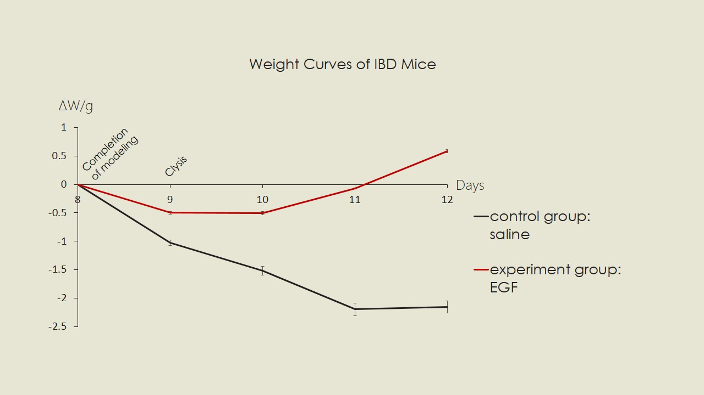
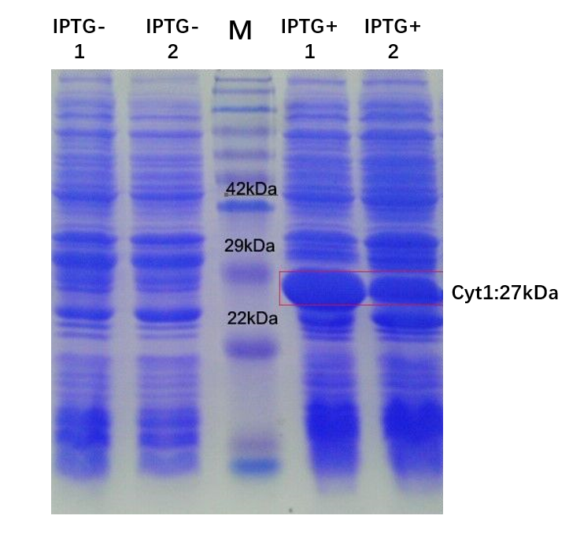

SYSU-MEDICINE
We hypothesized that the EGF (epidermal growth factor) produced by our engineered bacteria can be a therapeutic molecule for IBD (inflammatory bowel disease). To test this in an animal model, we collaborated with another iGEM team, SYSU-MEDICINE, who decided to apply mesenchymal stem cells (MSCs) therapy to cure IBD. We therefore purified human EGF proteins from bacteria and sent them to SYSU-MEDICINE team, who can evaluate whether our hEGF can be effective in treating IBD in their mice model. Both teams were excited to find that hEGF can significantly alleviate several IBD symptoms. Reference can be seen in wiki of
SYSU-MEDICINE.
The detailed procedures are described in the following:
Purification of hEGF
To facilitate protein purification, we engineered a His-tag in the C-terminal of hEGF (Fig. 1A). A string of the string of histidine residues (6x His-tag) binds to several types of immobilized metal ions, such as nickel, under specific buffer conditions. In addition, anti-His-tag antibodies are commercially available for detection of target protein by western blot. In either case, the tag provides a means of specifically purifying or detecting the recombinant protein without a protein-specific antibody.
Figure 1. The construct of hEGF:His-tag and western blot analysis of hEGF. A, The construct of hEGF:His-tag. It contains a lac operon which allows the T7 promoter to drive protein expression after IPTG induction. B, Western blot analysis of hEGF:His protein by anti-His-tag antibody. The red rectangle marks hEGF protein. BLANK is the control without IPTG induction.
Induction of colitis by TNBS
There are several ways to model IBD[1]. Team SYSU-MEDICINE used a drug TNBS (2,4,6-trinitro benzene sulfonic acid) to induce colitis, thereby modeling IBD. In analogous to human IBDs, the IBD mice shows many similar symptoms including intestine inflammation and weight loss. The experimental flow is illustrated in Fig. 2.
Figure 2. Diagram of the TNBS induced colitis. hEGF (5 μg in 25 ml enema) or saline enema was performed in Day 8.
TNBS colitis procedure
- On day 1, carefully shave a 1.5 × 1.5 cm field of the skin of the mouse using an electric razor. To avoid the mouse from touching TNBS (may potentially induce oral tolerance), preferentially select an area on the back between the shoulders.
- While holding the mouse with one hand, apply with the other hand, using a 200 ml pipette, 150 ml of the TNBS presensitization solution to the shaved abdominal skin. The solution is absorbed by the skin quickly. Control mice are treated with presensitization solution without TNBS. Leave the mice until day 8.
- On day 8, weigh and mark the mouse.
- Anesthetize the mouse by intraperitoneal injection of 150 ml of 5％ chloral hydrate solution per 20 g body weight.
- Fit a 3.5 F catheter to a 1 ml syringe and fill with TNBS solution.
- Insert the catheter into the colon 4 cm proximal to the anus. Proceed carefully to avoid damage or perforation of the colon wall.
- Slowly administer 150 ml of TNBS solution per 20g body weight into the colon lumen.
- Remove the catheter gently from the colon and keep the mouse with the head down in a vertical position for 60 s. To get reproducible results, it is important to ensure that the TNBS solution remains completely in the colon lumen.
- Return the mouse to the cage.
hEGF alleviates IBD symptoms
The IBD mice showed many symptoms, including weight loss and colon length reduction (Fig. 3 and 4). As illustrated in Fig. 2, we sacrificed mice after 5-day treatment with hEGF or saline, and measured the weight changes over time, as well as the colon length. We found hEGF, but not saline enema rescued the weight loss phenotype (Fig. 3). In addition, the colon length of hEGF treated group was longer than that of saline (Fig. 4). In aggregate, with the joint efforts from both two iGEM teams, we consolidated that recombinant hEGF protein produced from engineered bacteria can effectively relieve several IBD symptoms in an in vivo model, suggesting engineered bacteria capable of releasing therapeutic agents (such as hEGF) could be an attractive approach to fight against IBD.

Figure 3. Weight changes of IBD mice over time.
Figure 4. The length of colons of IBD mice.
Reference
[1] Modeling method reference: Chemically induced mouse models of intestinal inflammation Stefan Wirtz, Clemens Neufert, Benno Weigmann & Markus F Neurath Laboratory of Immunology, I Medical Clinic, University of Mainz, Mainz, Germany. Correspondence should be addressed to M.F.N. Published online 15 March 2007; doi:10.1038/nprot.2007.41
FAFU-CHINA
We have been keeping a good relationship with FAFU-CHINA iGEM team (Fujian Agriculture and Forestry University). At the beginning, we had some troubles in gene cloning. We therefore sought help from FAFU iGEM team. FAFU team was very helpful and finished a very important part cloning pNorV (Reference can be seen in
NO Sensor) in two weeks.
We have also helped the advancement of their project. In their project, they aimed to use Chlamydomonas reinhardti to co-express toxin genes cry and cyt by a 2A-peptide system and purify proteins for bio-activity validation. (Cry and Cyt toxins are Bti toxins that are effective in killing various species of mosquitoes, fungus gnats, and blackflies, while having almost no effect on other organisms. ) They therefore asked our team to help purifying from bacteria by His tag. We were able to finish the protein purification on time and got the bio-activity validated by FAFU-CHINA team. We thought it is helpful to their team and we enjoyed helping each other to improve each other's projects.

Figure 1. SDS-PAGE of Cyt1 protein expressed by E.coli. The red rectangle marked area is our expressed Cyt1 protein. The tracks on the left are the control groups without IPTG induction.